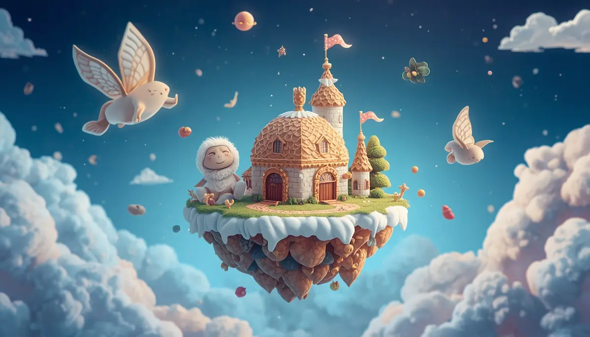
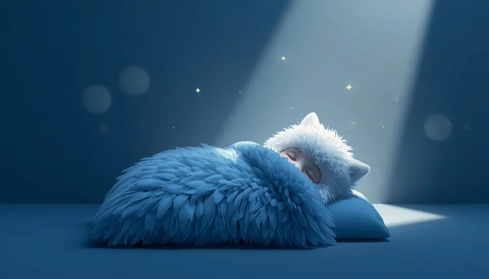
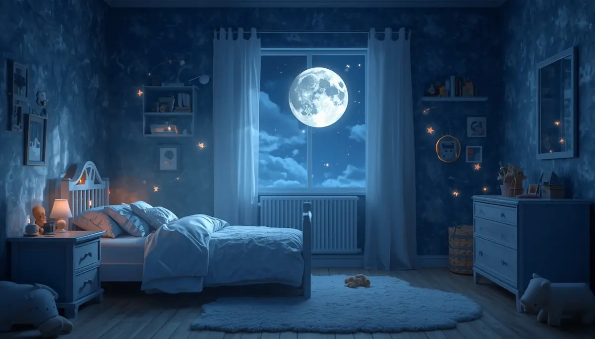

9. El cofre de los sueños

El guardián de los globos de cristal
Hola, pequeño creador de mundos.
Acomódate bien bajo tus mantas, siente cómo tu cama te abraza y te protege. Hoy vamos a descubrir un secreto que solo los grandes exploradores de la noche conocen.
¿Sabías que tu mente es como un jardín mágico? Durante el día, corres y juegas, recogiendo flores invisibles: una risa con un amigo, el color de una mariposa o el sabor de tu fruta favorita. Al llegar la noche, tu mente convierte esas flores en burbujas brillantes o globos de cristal llenos de colores y aventuras.
Antes de verlos, vamos a preparar el aire. Inhala profundamente por la nariz, llenando tu tripita de la calma azul de la noche... y ahora exhala por la boca, soltando todas las prisas y los ruidos del día.
Siente cómo tu cuerpo se vuelve blandito, como si te fundieras con la suavidad de tu almohada.
El escondite secreto de los sueños
Ahora escucha bien el secreto. Cuando abres los ojos por la mañana, los sueños no se borran ni desaparecen. Se guardan en un cofre de terciopelo muy suave que tienes justo detrás de tus ojos, en una isla hecha de nubes. Allí esperan, con mucha paciencia, a que vuelvas a buscarlos la noche siguiente.

Mira cómo flotan ahora hacia ese lugar seguro: un unicornio de algodón de azúcar que salta sobre un río de leche, o un castillo que flota en el aire porque sus ladrillos son pompas de jabón. Todos esos sueños bonitos son parte de ti y están a salvo.

Y si por ahí aparece un pensamiento feo o una sombra que te asusta, no te preocupes. Tú eres el dueño del viento de tu respiración. Solo tienes que soplarlo muy suavemente, así... , y verás cómo esa sombra se disuelve en el aire como si fuera humo de una chimenea que se lleva la brisa. En tu cofre solo entra la luz.
Descansando la mente creativa
Para que las burbujas de tus sueños puedan volar libres, necesitamos que tu cara descanse. Imagina que una luz tibia acaricia tu frente y borra cualquier arruga, dejándola lisa como un lago en calma.

Relaja tus ojos, deja que pesen mucho bajo tus párpados. Suelta tus mejillas y tu mandíbula. Siente que tu carita está tan tranquila que podrías flotar. Tu mente ahora es un espacio inmenso, claro y brillante como un cielo sin nubes. No tienes que pensar en nada, solo disfrutar de este alivio y de esta paz tan profunda. Estás seguro, estás en casa.
Esperando al sol con calma
Dormir es la forma más hermosa que tiene tu cuerpo de recargar la magia de tu cofre interior. Mientras tú descansas, tu mente está trabajando en silencio, dibujando las ideas nuevas y los colores que verás mañana.
Confía todo tu peso a la almohada. No hay nada que temer del mañana, porque cuando despiertes, el sol te saludará con alegría y tú llevarás guardado en tu corazón todo el brillo de tus viajes nocturnos.
Buenas noches, creador de mundos. Descansa.